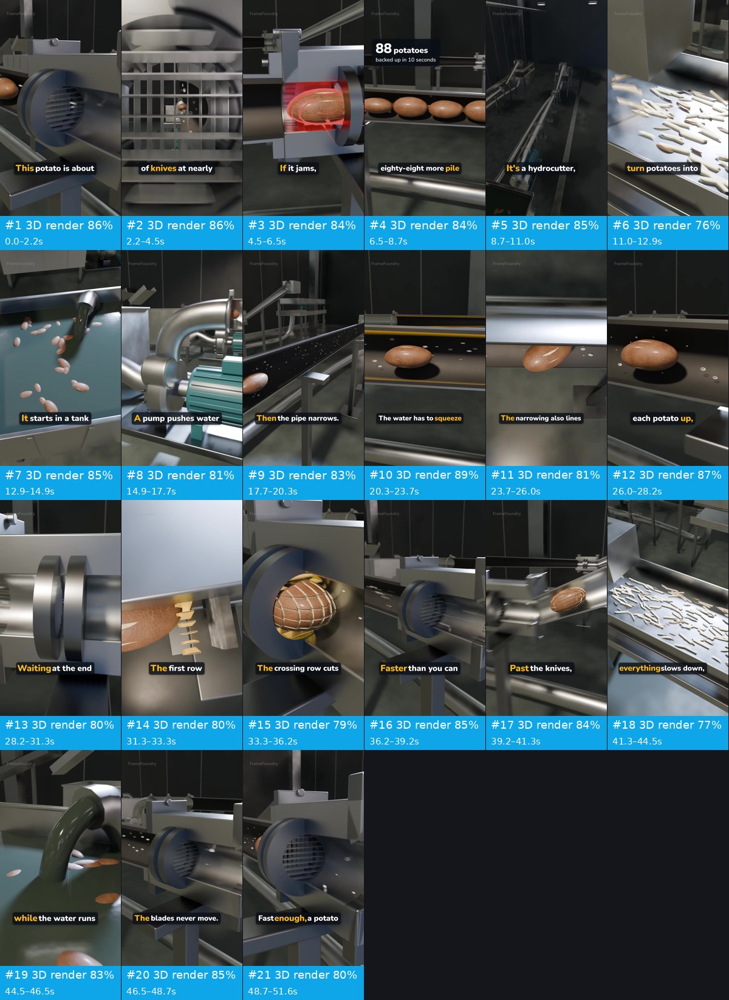
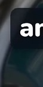
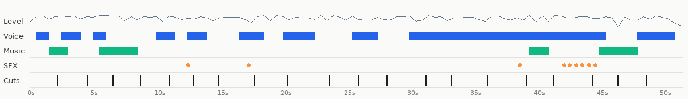

How this video was made
How a hydrocutter turns potatoes into fries: water accelerates each potato through a pipe into a fixed grid of blades.
Mixed production: 3D render 100%
- Confidence 83%, based on: tool measurements + AI assistant reviewed 21 shots
- ⚠️ 1 points are uncertain, see “Open questions”

Breakdown: how this video is built
What makes it work
- The hook: 0-9 s: danger + numbers: a potato about to hit knives at ~40 mph, and if it jams 88 more pile up in 10 seconds.
- Stakes-first hook built from two concrete numbers shown as animated data cards
- Every claim gets a dedicated cutaway or X-ray (narrowing pipe, blade rows, exploded slices)
- Paradox payoff: 'the blades never move — fast enough, a potato cuts itself'
- Short ~2.4 s shots, each matching one clause of narration
Production pipeline at a glance
| Stage | What this video uses | Remake approach |
|---|---|---|
| Base picture | 3D render 21 shots (100%) | AI in 7 generations |
| Packaging | 40 subtitle lines (bottom, up to 1 rows): white text, black outline, keywords highlighted in yellow, line height 4.6%; entrance: hard in×22, fade in×2, slide in×1; keywords change colour as they are spoken; styled text ×1 (large size, brown fill, multi-colour / gradient): "三"; text label ×14 (1 of them follow an object): "~40 mph", "into the knive", "88 potatoes", "backed up in 1", "It's ahydrocut", "apipe." …; Stickers / GIFs: animated sticker / GIF ×2; SFX hits on: subtitle in ×3, text label in ×1; Placed by spoken line ×4 (with new wording they follow the line, not the old second): text label "apipe." → 0.5s before "Then the pipe narr", on "pipe", animated sticker / GIF → 0.7s after "in ten seconds.", styled text "三" → 0.0s into "The first row" …; 3 persistent layers (unchanged across cuts: lay each on once for its span, not per shot): animated sticker / GIF 8.8–12.8s, text label "FrameFoundry" 31.5–51.6s (2 spans), animated sticker / GIF 39.3–44.4s | export packaging/subtitles.srt for timeline alignment |
| Sound | voice（TTS voice-over）, 4 distinct effects (9 hits) | voice: TTS voice-over; effects: add from a library at the listed times |
Content and structure
Narrative line
Keep this line in a remake: same order, same job at each step, with the point refilled from your own cases, numbers and material, so it is more than a change of subject.
| Time | Shots | Job | What it says |
|---|---|---|---|
| 0.0–8.7s | #1–#4 | grab attention | A potato is about to hit knives at 40 mph → Speed stat → If it jams… → 88 more in 10 seconds |
| 8.7–11.0s | #5 | — | It's a hydrocutter |
| 11.0–12.9s | #6 | — | How factories make fries |
| 12.9–14.9s | #7 | — | Starts in a tank of water |
| 14.9–31.3s | #8–#13 | add information | A pump pushes them into a pipe → The pipe narrows → Water speeds up and carries the potato → Lines each potato up → Nose first, dead centre → (… 6 points, each shot in the shot list) |
| 31.3–33.3s | #14 | — | First row slices |
| 33.3–36.2s | #15 | — | Crossing row cuts sticks |
| 36.2–39.2s | #16 | — | Through faster than a blink |
| 39.2–46.5s | #17–#19 | add information | The pipe widens → Fries land on a shaker → Water recirculates |
| 46.5–51.6s | #20, #21 | deliver the conclusion | The blades never move → Fast enough, a potato cuts itself |
Script (local speech recognition, unchecked; trust on-screen subtitles for names and homophones)
| Time | Who | Line | Delivery |
|---|---|---|---|
| 0.1–4.1s | narration | This potato is about to hit a grid of knives at nearly 40 miles an hour. | measured: rate fast (4.0 words/s), wide pitch movement |
| 4.5–8.0s | narration | If it jams, 88 more pile up behind it in 10 seconds, | measured: rate fast (3.4 words/s), wide pitch movement |
| 8.0–12.6s | narration | it's a hydro cutter and it's how factories turn potatoes into fries. | measured: rate normal (2.6 words/s), wide pitch movement |
| 12.9–14.4s | narration | It starts in a tank of water. | measured: rate fast (4.4 words/s), wide pitch movement |
| 14.9–17.4s | narration | Pump pushes water and potatoes into a pipe. | measured: rate normal (3.3 words/s), wide pitch movement |
| 17.7–23.9s | narration | Then the pipe narrows the water has to squeeze through so it speeds up and carries the potato with it. | measured: rate normal (3.2 words/s) |
| 23.9–27.7s | narration | The narrowing also lines each potato up nose first dead center. | measured: rate normal (2.9 words/s), wide pitch movement |
| 28.1–33.0s | narration | Waiting at the end is a grid of thin steel blades. The first row slices the potato. | measured: rate fast (3.5 words/s), wide pitch movement |
| 33.4–38.7s | narration | ACssing row cuts every slice into sticks faster than you can blink the whole potato is through. | measured: rate normal (3.2 words/s), wide pitch movement |
| 39.1–40.9s | narration | Pass the knives, the pipe widens, | measured: rate fast (3.4 words/s), wide pitch movement |
| 40.9–46.1s | narration | everything slows down and the fries land on a shaking screen while the water runs back to the tank. | measured: rate fast (3.6 words/s) |
| 46.6–50.6s | narration | Bldes never move fast enough, a potato cuts itself. | measured: rate normal (2.3 words/s), wide pitch movement, lower than this speaker's other lines |
Shot list
| # | Frame | Time | What it says | Picture | Camera |
|---|---|---|---|---|---|
| 1 |  | 0:00.0 · 2.2s | grab attention: A potato is about to hit knives at 40 mph | Hook close-up: a potato racing toward a grid of knives in th… | smooth move |
| 2 |  | 0:02.2 · 2.3s | grab attention: Speed stat | View through the blade grid as the potato approaches; '~40 m… | smooth move |
| 3 |  | 0:04.5 · 2.0s | grab attention: If it jams… | Red X-ray cutaway of a potato jammed in the cutter. Style: C… | smooth move |
| 4 |  | 0:06.5 · 2.2s | grab attention: 88 more in 10 seconds | Potatoes back up in the pipe; counter card ticks up to '88 p… | static (subject moves) |
| 5 |  | 0:08.7 · 2.3s | It's a hydrocutter | Wide pull-back over the hydrocutter line in the factory hall… | smooth move |
| 6 |  | 0:11.0 · 1.9s | How factories make fries | Wide over the line. Style: Clean 3D product-visualisation re… | smooth move |
| 7 |  | 0:12.9 · 1.9s | Starts in a tank of water | Potatoes poured into a water tank. Style: Clean 3D product-v… | smooth move |
| 8 |  | 0:14.9 · 2.9s | add information: A pump pushes them into a pipe | Teal pump motor and pipework pushing water and potatoes. Sty… | smooth move |
| 9 |  | 0:17.7 · 2.6s | add information: The pipe narrows | Pipe narrows; yellow highlight glow traces the narrowing sec… | smooth move |
| 10 |  | 0:20.3 · 3.3s | add information: Water speeds up and carries the potato | Potato speeds up inside the pipe (cutaway). Style: Clean 3D … | static (subject moves) |
| 11 |  | 0:23.7 · 2.3s | add information: Lines each potato up | Potato being centred by the narrowing pipe. Style: Clean 3D … | static (subject moves) |
| 12 |  | 0:26.0 · 2.2s | add information: Nose first, dead centre | Potato travelling nose first, dead centre. Style: Clean 3D p… | static (subject moves) |
| 13 |  | 0:28.2 · 3.1s | add information: A grid of thin blades | Cutter housing; yellow highlight on the grid of thin steel b… | smooth move |
| 14 |  | 0:31.3 · 2.1s | First row slices | Macro cutaway: first row of blades slices the potato into sl… | smooth move |
| 15 |  | 0:33.3 · 2.9s | Crossing row cuts sticks | Crossing row cuts each slab into sticks (exploded view). Sty… | smooth move |
| 16 |  | 0:36.2 · 3.0s | Through faster than a blink | Potato bursts through the grid as a spray of fries. Style: C… | smooth move |
| 17 |  | 0:39.2 · 2.1s | add information: The pipe widens | Pipe widens; fries fan out. Style: Clean 3D product-visualis… | smooth move |
| 18 |  | 0:41.3 · 3.1s | add information: Fries land on a shaker | Fries land on a shaking screen. Style: Clean 3D product-visu… | smooth move |
| 19 |  | 0:44.5 · 2.0s | add information: Water recirculates | Water runs back into the tank. Style: Clean 3D product-visua… | smooth move |
| 20 |  | 0:46.5 · 2.2s | deliver the conclusion: The blades never move | Static blade grid as potatoes shoot through. Style: Clean 3D… | smooth move |
| 21 |  | 0:48.7 · 2.9s | deliver the conclusion: Fast enough, a potato cuts itself | Final burst of fries from the cutter. Style: Clean 3D produc… | static (subject moves) |
Cast, scenes and props
- Visual style: Clean 3D product-visualisation render (Blender-style): brushed stainless-steel food-processing machinery, dark industrial hall, glossy brown potatoes, soft studio lighting; 9:16.
- No cast extracted this time (needs AI image reading)
Scenes
| Scene | Where | When | Set / light | Shots |
|---|---|---|---|---|
| S1 | industrial potato-processing hall with a hydrocutter line | — | dark hall, brushed steel, soft key light | #1–#21 |
Props / products / logos
- hydrocutter (pump, pipe, cutter housing with blade grid) (shots #1–#21): one consistent 3D model
- potatoes / fries (shots #1–#21)
Packaging layer (subtitles / styled text / stickers / sound-effect hits)
- 40 subtitle lines (bottom, up to 1 rows): white text, black outline, keywords highlighted in yellow, line height 4.6%; entrance: hard in×22, fade in×2, slide in×1; keywords change colour as they are spoken
- styled text ×1 (large size, brown fill, multi-colour / gradient): "三"
- text label ×14 (1 of them follow an object): "~40 mph", "into the knive", "88 potatoes", "backed up in 1", "It's ahydrocut", "apipe." …
- Stickers / GIFs: animated sticker / GIF ×2
- SFX hits on: subtitle in ×3, text label in ×1
- Placed by spoken line ×4 (with new wording they follow the line, not the old second): text label "apipe." → 0.5s before "Then the pipe narr", on "pipe", animated sticker / GIF → 0.7s after "in ten seconds.", styled text "三" → 0.0s into "The first row" …
- 3 persistent layers (unchanged across cuts: lay each on once for its span, not per shot): animated sticker / GIF 8.8–12.8s, text label "FrameFoundry" 31.5–51.6s (2 spans), animated sticker / GIF 39.3–44.4s
text timeline (55 rows)
| Time | Kind | Text | Style | In / out | SFX |
|---|---|---|---|---|---|
| 0.00–0.70s | subtitle | This potato is about | white text, black outline, keywords highlighted in yellow, line height 5.0% (about 97px) | fade out | — |
| 1.00–1.80s | subtitle | to hit a grid | white text, black outline, keywords highlighted in yellow, line height 5.0% (about 97px) | hard out | — |
| 1.80–3.00s | subtitle | of knives at nearly | white text, black outline, keywords highlighted in yellow, line height 5.1% (about 98px) | hard in / hard out | — |
| 3.00–4.50s | text label | ~40 mph | white text, black outline, line height 8.4% (about 161px) | hard in / hard out | — |
| 3.00–4.50s | text label | into the knives | white text, line height 3.0% (about 59px) | hard in / hard out | — |
| 3.00–4.50s | subtitle | forty miles an hour. | white text, black outline, keywords highlighted in yellow, line height 4.5% (about 87px) | hard in / hard out | — |
| 4.50–5.50s | subtitle | If it jams, | white text, black outline, keywords highlighted in yellow, line height 5.2% (about 100px) | hard in / hard out | — |
| 5.50–8.50s | text label | 88 potatoes | white text, black outline, line height 8.2% (about 157px) | fade in / hard out | — |
| 5.50–8.50s | text label | backed up in 10 seconds | black text, white outline, line height 3.0% (about 59px) | fade in / fade out | — |
| 5.50–6.10s | subtitle | eighty-eight more pile | white text, black outline, keywords highlighted in white, line height 4.3% (about 83px) | hard in / slide out | — |
| 6.50–7.40s | subtitle | up behind it | white text, black outline, keywords highlighted in yellow, line height 4.8% (about 92px) | — | — |
| 7.50–8.10s | subtitle | in ten seconds. | white text, black outline, keywords highlighted in yellow, line height 4.1% (about 79px) | hard in / fade out | — |
| 8.50–9.70s | text label | It's ahydrocutter, | yellow text, keywords highlighted in white, line height 5.2% (about 100px) | slide out | — |
| 9.90–11.00s | subtitle | and it's how factories | white text, black outline, keywords highlighted in yellow, line height 4.0% (about 76px) | hard in | — |
| 11.00–12.00s | subtitle | turn potatoes into | white text, black outline, keywords highlighted in yellow, line height 4.7% (about 90px) | — | — |
| 12.00–12.90s | subtitle | fries. | white text, black outline, line height 5.5% (about 105px) | hard in | — |
| 12.90–14.00s | subtitle | It starts in a tank | white text, black outline, keywords highlighted in yellow, line height 4.1% (about 79px) | hard in / hard out | — |
| 14.00–14.90s | subtitle | ofwater. | white text, black outline, keywords highlighted in white, line height 4.8% (about 92px) | hard in / hard out | — |
| 14.90–16.00s | subtitle | A pump pushes water | white text, black outline, keywords highlighted in yellow, line height 5.0% (about 97px) | hard in | — |
| 16.00–16.90s | subtitle | andpotatoesinto | white text, black outline, keywords highlighted in white, line height 4.6% (about 88px) | hard out | — |
| 17.00–17.10s | text label | apipe. | yellow text, black outline, keywords highlighted in black, line height 5.8% (about 111px) | hard in / hard out | — |
| 17.50–19.30s | subtitle | Then the pipe narrows. | white text, black outline, keywords highlighted in yellow, line height 4.6% (about 88px) | hard out | — |
| 19.50–20.30s | subtitle | The water has to squeeze | white text, black outline, keywords highlighted in yellow, line height 4.0% (about 76px) | fade in / hard out | — |
| 20.00–20.10s | text label | 0 | grey text, line height 0.7% (about 13px) | hard in / hard out | — |
| 20.50–21.10s | subtitle | through,so it speeds | white text, black outline, keywords highlighted in yellow, line height 4.6% (about 88px) | slide out | — |
| 21.50–22.40s | subtitle | up, and carries | white text, black outline, keywords highlighted in yellow, line height 5.3% (about 103px) | hard out | — |
| 22.50–23.10s | text label · follows an object | 8 | black text, grey outline, line height 1.6% (about 30px) | hard in / hard out | — |
| 22.50–23.10s | subtitle | the potato with it. | white text, black outline, keywords highlighted in white, line height 4.9% (about 94px) | hard in / slide out | — |
| 23.50–25.00s | subtitle | The narrowing also lines | white text, black outline, keywords highlighted in yellow, line height 4.4% (about 84px) | hard out | — |
| 25.00–26.00s | subtitle | each potato up, | white text, black outline, keywords highlighted in yellow, line height 5.3% (about 101px) | hard in / hard out | — |
| 26.00–27.60s | subtitle | nose first, dead centre. | white text, black outline, keywords highlighted in yellow, line height 3.7% (about 71px) | hard out | — |
| 28.00–28.90s | text label | Waitingat the end | yellow text, black outline, blue box, keywords highlighted in white, line height 5.2% (about 100px) | pop / hard out | — |
| 28.90–29.50s | text label | is a grid | white text, black outline, keywords highlighted in yellow, line height 5.4% (about 103px) | — | — |
| 29.50–31.30s | subtitle | of thin steel blades. | white text, black outline, keywords highlighted in yellow, line height 3.8% (about 72px) | hard in / hard out | — |
| 31.30–31.70s | styled text | 三 | brown text, orange box, keywords highlighted in orange, line height 13.2% (about 253px) | hard in / fade out | — |
| 31.30–32.00s | subtitle | The first row | white text, black outline, keywords highlighted in white, line height 4.5% (about 87px) | hard in / hard out | — |
| 31.50–42.40s | text label | FrameFoundry | grey text, line height 2.8% (about 54px) | pop / fade out (bounces / changes colour midway) | — |
| 32.00–33.30s | subtitle | slices the potato. | white text, black outline, keywords highlighted in yellow, line height 5.0% (about 96px) | hard in / hard out | — |
| 33.30–34.50s | subtitle | The crossing row cuts | white text, black outline, keywords highlighted in white, line height 4.6% (about 89px) | hard out | — |
| 34.50–35.60s | subtitle | every slice into sticks. | white text, black outline, keywords highlighted in yellow, line height 4.1% (about 78px) | hard in / shrink out | — |
| 36.00–37.00s | subtitle | Fasterthan you can | white text, black outline, keywords highlighted in yellow, line height 5.2% (about 100px) | hard out | — |
| 37.00–37.80s | subtitle | blink, the whole | white text, black outline, keywords highlighted in yellow, line height 4.9% (about 94px) | hard in / hard out | — |
| 38.00–38.60s | subtitle | potato is through. | white text, black outline, keywords highlighted in white, line height 4.9% (about 94px) | slide in / hard out | — |
| 39.00–40.00s | text label | Pastthe knives, | yellow text, black outline, keywords highlighted in white, line height 5.2% (about 100px) | hard in / hard out | — |
| 40.00–41.30s | subtitle | the pipe widens, | white text, black outline, keywords highlighted in yellow, line height 5.2% (about 100px) | hard in / hard out | — |
| 41.30–42.40s | subtitle | everything slows down, | white text, black outline, keywords highlighted in yellow, line height 4.2% (about 80px) | — | — |
| 42.40–43.30s | subtitle | and the fries land | white text, black outline, keywords highlighted in yellow, line height 4.3% (about 83px) | hard in | click |
| 42.50–42.60s | text label | ndry | black text, grey outline, line height 2.3% (about 45px) | hard in / hard out | pop |
| 42.50–51.60s | text label | FrameFoundry | grey text, line height 2.8% (about 54px) | fade in (bounces / changes colour midway) | — |
| 43.30–44.50s | subtitle | on a shaking screen | white text, black outline, keywords highlighted in yellow, line height 4.7% (about 91px) | — | click |
| 44.50–45.40s | subtitle | while the water runs | white text, black outline, keywords highlighted in yellow, line height 4.4% (about 84px) | hard in / hard out | pop |
| 45.40–46.50s | subtitle | back to the tank. | white text, black outline, keywords highlighted in yellow, line height 4.3% (about 83px) | hard in / hard out | — |
| 46.50–48.40s | subtitle | The blades never move. | white text, black outline, keywords highlighted in yellow, line height 4.3% (about 83px) | hard in / hard out | — |
| 48.50–49.10s | subtitle | Fastenough,a potato | white text, black outline, keywords highlighted in yellow, line height 4.7% (about 90px) | fade in / hard out | — |
| 49.50–51.20s | subtitle | cuts itself. | white text, black outline, keywords highlighted in white, line height 4.3% (about 83px) | hard out | — |
Stickers / GIFs / picture-in-picture
| Time | Kind | Position | Motion | Confidence | Crop |
|---|---|---|---|---|---|
| 8.80–12.80s | animated sticker / GIF | x10% y74% w10% h11% | animated | medium (unchanged across a cut) |  |
| 39.30–44.40s | animated sticker / GIF | x20% y63% w15% h6% | animated | medium (unchanged across a cut) |
| Time | Layer | Spoken line |
|---|---|---|
| 8.80s | animated sticker / GIF | 0.7s after "in ten seconds." |
| 17.00s | text label "apipe." | 0.5s before "Then the pipe narr", on "pipe" |
| 31.30s | styled text "三" | 0.0s into "The first row" |
| 39.30s | animated sticker / GIF | 0.7s after "potato is through." |
- Remake: import
packaging/subtitles.srtinto your editor and replace the words; styled version inpackaging/overlays.ass; find matching stickers and GIFs in an asset library
Sound
Voice
- male-leaning
- Source: TTS voice-over
- Remake: TTS voice-over: CapCut text-to-speech or another TTS tool, with a similar voice and pace
Sound effects (9 hits, 4 distinct sounds)
| Sound | Listen | Type | Times used | At | On screen |
|---|---|---|---|---|---|
| F1 | click | 5 | 12.6s, 42.3s, 43.2s, 44.2s, 44.7s | subtitle "and the fries la" appears; subtitle "on a shaking scr" appears; subtitle "while the water " appears | |
| F2 | whoosh | 1 | 17.3s | — | |
| F3 | click | 1 | 38.7s | — | |
| F4 | pop | 2 | 42.6s, 43.6s | text label "ndry" appears |
- Remake: play each sound, find a similar one in your editor's library and place it at the times under “At”
Listen to the tracks
Sound measurements and evidence

- Loudness -23.8 dBFS, peak -5.2 dBFS
- sound runs across cuts, laid in post as one bed (background changes 4.7dB at cuts vs 3.0dB within shots)
- Voice on 61% of the duration, pitch about 132.4Hz
- Voice source: TTS voice-over (TTS voice-over 64%, human recording 27%, native dialogue from the AI video model 9%)
- Voice and background sound run across cuts: the voice-over was laid on separately in post (TTS or a human voice-over)
Open questions
- No AI listened to the soundtrack (the review covered the picture only): real voice versus TTS is inferred from the waveform; the effects were found on the separated effects track and their types are estimated from the sound. Play the stems and each effect under “Sound” to check
Remake plan
Planned for MiniMax H3 / H3 Max: ≤15 s per call, several shots per call, takes reference video (3 clips, ≤15 s in all), ≤9 reference images, first / last frame, native sound. Name another model and the split, lengths and prompts are redone for it.
Remake it yourself: do it in this order
Copy the method and the rhythm, not the pictures: keep what each part does and fill it with your own content and material.
This is a 3D / animation. Do the steps in this order; the detail for each is in the matching subsection below.
- Write the content: write yours in the same 10 steps as the original (narrative line under “Content and structure”)
- Generate: 7 calls (52 s), several shots each. Each shot gets one source frame for composition (subtitles erased, in
remake/refs/), the swapped-in people, animals and products get reference images, and the prompt lists the shots in order - Adapt the prompts to your model: each unit's draft is already laid out in MiniMax H3 / H3 Max's shot, tag and audio format; refine it against the model's prompt guide before generating (or run
rea-video plan <folder> --rewrite-prompts) - Voice: the original is TTS voice-over; record it yourself or use TTS; 12 lines with their pace in the script table under “Sound”
- Edit: follow the order and lengths in the shot list; the original has 21 shots at 2.5s each
- Subtitles and styled text: import
packaging/subtitles.srtand replace the words; timing and style under “Packaging layer” - Sound effects: 9; place similar ones from a library at the times under “Sound”
- Put it together and compare: hand the shots you made to the agent; it places them on the original timeline, keeps the original where yours are missing, and renders a side-by-side comparison with the original
AI generation
7 generations, 52 s in total
> ⚠️ G1, G2, G3, G4, G5, G6, G7: the prompts are the tool's drafts, already in MiniMax H3 / H3 Max's layout. Check them against the model's conventions and good prompts for similar shots, then put the finals into remake/prompts.json; rea-video plan then checks the format.
- How it is generated: multi-shot from key frames
| Part | Shots | Time | Length | Prepare |
|---|---|---|---|---|
| G1 | #1–#4 | 0.0–8.7s | 8.7s | reference images |
| G2 | #5–#8 | 8.7–17.7s | 9.0s | reference images |
| G3 | #9–#11 | 17.7–26.0s | generate 9s, trim to 8.3s | reference images |
| G4 | #12–#14 | 26.0–33.3s | generate 8s, trim to 7.3s | reference images |
| G5 | #15–#17 | 33.3–41.3s | 8.0s | reference images |
| G6 | #18, #19 | 41.3–46.5s | generate 6s, trim to 5.1s | reference images |
| G7 | #20, #21 | 46.5–51.6s | generate 6s, trim to 5.1s | reference images |
Why it is split this way
- Grouping: consecutive shots share a call where they fit, ≤10s per call, ≤4 shots; a long stretch is cut at a scene change first
- Inputs: the model also takes reference video, but key frames are used here: one key frame per shot fixes composition and look, swapped-in things get their own images
- Audio: the model can generate action sound effects and ambience along with the picture; voice-over is better done as separate TTS and mixed in, so copy and timing stay editable
- Packaging: the subtitle, text label, sticker, styled text on the generated shots is post-production packaging: keep it out of the prompts (erased from source references) and lay it back on from the packaging timeline after generation
Frames to make first (21)
When swapping people or products, or switching to shot-by-shot image-to-video, prepare each shot's first frame as below:
| Shot | Role | How | Reference images | Save as |
|---|---|---|---|---|
| #1 | first frame | text-to-image (or low-denoise I2I from source frame) | shots/shot_001_first.jpg (source first frame: composition and style reference) | remake/redrawn/shot001.png |
| #2 | first frame | text-to-image (or low-denoise I2I from source frame) | shots/shot_002_first.jpg (source first frame: composition and style reference) | remake/redrawn/shot002.png |
| #3 | first frame | text-to-image (or low-denoise I2I from source frame) | shots/shot_003_first.jpg (source first frame: composition and style reference) | remake/redrawn/shot003.png |
| #4 | first frame | text-to-image (or low-denoise I2I from source frame) | shots/shot_004_first.jpg (source first frame: composition and style reference) | remake/redrawn/shot004.png |
| #5 | first frame | text-to-image (or low-denoise I2I from source frame) | shots/shot_005_first.jpg (source first frame: composition and style reference) | remake/redrawn/shot005.png |
| #6 | first frame | text-to-image (or low-denoise I2I from source frame) | shots/shot_006_first.jpg (source first frame: composition and style reference) | remake/redrawn/shot006.png |
| #7 | first frame | text-to-image (or low-denoise I2I from source frame) | shots/shot_007_first.jpg (source first frame: composition and style reference) | remake/redrawn/shot007.png |
| #8 | first frame | text-to-image (or low-denoise I2I from source frame) | shots/shot_008_first.jpg (source first frame: composition and style reference) | remake/redrawn/shot008.png |
| #9 | first frame | text-to-image (or low-denoise I2I from source frame) | shots/shot_009_first.jpg (source first frame: composition and style reference) | remake/redrawn/shot009.png |
| #10 | first frame | text-to-image (or low-denoise I2I from source frame) | shots/shot_010_first.jpg (source first frame: composition and style reference) | remake/redrawn/shot010.png |
| #11 | first frame | text-to-image (or low-denoise I2I from source frame) | shots/shot_011_first.jpg (source first frame: composition and style reference) | remake/redrawn/shot011.png |
| #12 | first frame | text-to-image (or low-denoise I2I from source frame) | shots/shot_012_first.jpg (source first frame: composition and style reference) | remake/redrawn/shot012.png |
| #13 | first frame | text-to-image (or low-denoise I2I from source frame) | shots/shot_013_first.jpg (source first frame: composition and style reference) | remake/redrawn/shot013.png |
| #14 | first frame | text-to-image (or low-denoise I2I from source frame) | shots/shot_014_first.jpg (source first frame: composition and style reference) | remake/redrawn/shot014.png |
| #15 | first frame | text-to-image (or low-denoise I2I from source frame) | shots/shot_015_first.jpg (source first frame: composition and style reference) | remake/redrawn/shot015.png |
| #16 | first frame | text-to-image (or low-denoise I2I from source frame) | shots/shot_016_first.jpg (source first frame: composition and style reference) | remake/redrawn/shot016.png |
| #17 | first frame | text-to-image (or low-denoise I2I from source frame) | shots/shot_017_first.jpg (source first frame: composition and style reference) | remake/redrawn/shot017.png |
| #18 | first frame | text-to-image (or low-denoise I2I from source frame) | shots/shot_018_first.jpg (source first frame: composition and style reference) | remake/redrawn/shot018.png |
| #19 | first frame | text-to-image (or low-denoise I2I from source frame) | shots/shot_019_first.jpg (source first frame: composition and style reference) | remake/redrawn/shot019.png |
| #20 | first frame | text-to-image (or low-denoise I2I from source frame) | shots/shot_020_first.jpg (source first frame: composition and style reference) | remake/redrawn/shot020.png |
| #21 | first frame | text-to-image (or low-denoise I2I from source frame) | shots/shot_021_first.jpg (source first frame: composition and style reference) | remake/redrawn/shot021.png |
- #1 first frame (text-to-image (or low-denoise I2I from source frame))
- Image prompt: Vertical 9:16. medium shot, subject in the lower middle of the frame, camera push-in. Hook close-up: a potato racing toward a grid of knives in the cutter housing
- #2 first frame (text-to-image (or low-denoise I2I from source frame))
- Image prompt: Vertical 9:16. medium shot, subject centred in frame, camera pull-out. View through the blade grid as the potato approaches; '~40 mph into the knives' stat card
- #3 first frame (text-to-image (or low-denoise I2I from source frame))
- Image prompt: Vertical 9:16. medium shot, subject centred in frame, camera pull-out. Red X-ray cutaway of a potato jammed in the cutter
- #4 first frame (text-to-image (or low-denoise I2I from source frame))
- Image prompt: Vertical 9:16. medium shot, subject in the upper left of the frame. Potatoes back up in the pipe; counter card ticks up to '88 potatoes backed up in 10 seconds'
- #5 first frame (text-to-image (or low-denoise I2I from source frame))
- Image prompt: Vertical 9:16. medium close-up, subject in the lower middle of the frame, camera push-in. Wide pull-back over the hydrocutter line in the factory hall
- #6 first frame (text-to-image (or low-denoise I2I from source frame))
- Image prompt: Vertical 9:16. medium close-up, subject centred in frame, camera push-in. Wide over the line
- #7 first frame (text-to-image (or low-denoise I2I from source frame))
- Image prompt: Vertical 9:16. medium shot, subject in the lower middle of the frame, camera pan / track. Potatoes poured into a water tank
- #8 first frame (text-to-image (or low-denoise I2I from source frame))
- Image prompt: Vertical 9:16. medium close-up, subject in the lower middle of the frame, camera push-in. Teal pump motor and pipework pushing water and potatoes
- #9 first frame (text-to-image (or low-denoise I2I from source frame))
- Image prompt: Vertical 9:16. medium shot, subject in the lower middle of the frame, camera pan / track. Pipe narrows; yellow highlight glow traces the narrowing section
- #10 first frame (text-to-image (or low-denoise I2I from source frame))
- Image prompt: Vertical 9:16. medium shot, subject in the lower middle of the frame. Potato speeds up inside the pipe (cutaway)
- #11 first frame (text-to-image (or low-denoise I2I from source frame))
- Image prompt: Vertical 9:16. medium shot, subject in the lower middle of the frame. Potato being centred by the narrowing pipe
- #12 first frame (text-to-image (or low-denoise I2I from source frame))
- Image prompt: Vertical 9:16. medium shot, subject in the lower middle of the frame. Potato travelling nose first, dead centre
- #13 first frame (text-to-image (or low-denoise I2I from source frame))
- Image prompt: Vertical 9:16. medium shot, subject in the lower middle of the frame, camera push-in. Cutter housing; yellow highlight on the grid of thin steel blades
- #14 first frame (text-to-image (or low-denoise I2I from source frame))
- Image prompt: Vertical 9:16. medium close-up, subject in the lower middle of the frame, camera pull-out. Macro cutaway: first row of blades slices the potato into slabs
- #15 first frame (text-to-image (or low-denoise I2I from source frame))
- Image prompt: Vertical 9:16. medium close-up, subject centred in frame, camera push-in. Crossing row cuts each slab into sticks (exploded view)
- #16 first frame (text-to-image (or low-denoise I2I from source frame))
- Image prompt: Vertical 9:16. medium shot, subject in the lower middle of the frame, camera push-in. Potato bursts through the grid as a spray of fries
- #17 first frame (text-to-image (or low-denoise I2I from source frame))
- Image prompt: Vertical 9:16. medium shot, subject in the right of the frame, camera push-in. Pipe widens; fries fan out
- #18 first frame (text-to-image (or low-denoise I2I from source frame))
- Image prompt: Vertical 9:16. medium close-up, subject centred in frame, camera push-in. Fries land on a shaking screen
- #19 first frame (text-to-image (or low-denoise I2I from source frame))
- Image prompt: Vertical 9:16. medium shot, subject in the lower middle of the frame, camera pull-out. Water runs back into the tank
- #20 first frame (text-to-image (or low-denoise I2I from source frame))
- Image prompt: Vertical 9:16. medium shot, subject in the lower middle of the frame, camera push-in. Static blade grid as potatoes shoot through
- #21 first frame (text-to-image (or low-denoise I2I from source frame))
- Image prompt: Vertical 9:16. medium shot, subject in the lower middle of the frame. Final burst of fries from the cutter
G1 · shots #1–#4 · 8.7s
- reference images: source frames of shots #1, #2, #3, #4 (subtitles erased)
Draft prompt (in MiniMax H3 / H3 Max's layout; check it and put the final into remake/prompts.json before generating):
integrated_multimodal_description: Generate the shots below in order in one go, hard cuts between them; each shot takes composition, size and camera from its source frame image. Vertical 9:16; soft frontal light, cool tones, background clearly blurred. [Shot 1] Hook close-up: a potato racing toward a grid of knives in the cutter housing. (composition: <Picture 1>) [Shot 2] At 00:02.200, the camera cuts to: View through the blade grid as the potato approaches; '~40 mph into the knives' stat card. (composition: <Picture 2>) [Shot 3] At 00:04.500, the camera cuts to: Red X-ray cutaway of a potato jammed in the cutter. (composition: <Picture 3>) [Shot 4] At 00:06.533, the camera cuts to: Potatoes back up in the pipe; counter card ticks up to '88 potatoes backed up in 10 seconds'. (composition: <Picture 4>) overall_soundscape: Only the natural sounds of the actions on screen. non_diegetic_music: N/A
G2 · shots #5–#8 · 9.0s
- reference images: source frames of shots #5, #6, #7, #8 (subtitles erased)
Draft prompt (in MiniMax H3 / H3 Max's layout; check it and put the final into remake/prompts.json before generating):
integrated_multimodal_description: Generate the shots below in order in one go, hard cuts between them; each shot takes composition, size and camera from its source frame image. Vertical 9:16; soft frontal light, cool tones, background clearly blurred. [Shot 1] Wide pull-back over the hydrocutter line in the factory hall. (composition: <Picture 1>) [Shot 2] At 00:02.267, the camera cuts to: Wide over the line. (composition: <Picture 2>) [Shot 3] At 00:04.200, the camera cuts to: Potatoes poured into a water tank. (composition: <Picture 3>) [Shot 4] At 00:06.133, the camera cuts to: Teal pump motor and pipework pushing water and potatoes. (composition: <Picture 4>) overall_soundscape: Only the natural sounds of the actions on screen. non_diegetic_music: N/A
G3 · shots #9–#11 · 8.3s
- reference images: source frames of shots #9, #10, #11 (subtitles erased)
Draft prompt (in MiniMax H3 / H3 Max's layout; check it and put the final into remake/prompts.json before generating):
integrated_multimodal_description: Generate the shots below in order in one go, hard cuts between them; each shot takes composition, size and camera from its source frame image. Vertical 9:16; soft frontal light, cool tones, background clearly blurred. [Shot 1] Pipe narrows; yellow highlight glow traces the narrowing section. (composition: <Picture 1>) [Shot 2] At 00:02.600, the camera cuts to: Potato speeds up inside the pipe (cutaway). (composition: <Picture 2>) [Shot 3] At 00:05.933, the camera cuts to: Potato being centred by the narrowing pipe. (composition: <Picture 3>) overall_soundscape: Only the natural sounds of the actions on screen. non_diegetic_music: N/A
G4 · shots #12–#14 · 7.3s
- reference images: source frames of shots #12, #13, #14 (subtitles erased)
Draft prompt (in MiniMax H3 / H3 Max's layout; check it and put the final into remake/prompts.json before generating):
integrated_multimodal_description: Generate the shots below in order in one go, hard cuts between them; each shot takes composition, size and camera from its source frame image. Vertical 9:16; soft frontal light, cool tones, background clearly blurred. [Shot 1] Potato travelling nose first, dead centre. (composition: <Picture 1>) [Shot 2] At 00:02.200, the camera cuts to: Cutter housing; yellow highlight on the grid of thin steel blades. (composition: <Picture 2>) [Shot 3] At 00:05.267, the camera cuts to: Macro cutaway: first row of blades slices the potato into slabs. (composition: <Picture 3>) overall_soundscape: Only the natural sounds of the actions on screen. non_diegetic_music: N/A
G5 · shots #15–#17 · 8.0s
- reference images: source frames of shots #15, #16, #17 (subtitles erased)
Draft prompt (in MiniMax H3 / H3 Max's layout; check it and put the final into remake/prompts.json before generating):
integrated_multimodal_description: Generate the shots below in order in one go, hard cuts between them; each shot takes composition, size and camera from its source frame image. Vertical 9:16; soft frontal light, cool tones, background clearly blurred. [Shot 1] Crossing row cuts each slab into sticks (exploded view). (composition: <Picture 1>) [Shot 2] At 00:02.867, the camera cuts to: Potato bursts through the grid as a spray of fries. (composition: <Picture 2>) [Shot 3] At 00:05.867, the camera cuts to: Pipe widens; fries fan out. (composition: <Picture 3>) overall_soundscape: Only the natural sounds of the actions on screen. non_diegetic_music: N/A
G6 · shots #18, #19 · 5.1s
- reference images: source frames of shots #18, #19 (subtitles erased)
Draft prompt (in MiniMax H3 / H3 Max's layout; check it and put the final into remake/prompts.json before generating):
integrated_multimodal_description: Generate the shots below in order in one go, hard cuts between them; each shot takes composition, size and camera from its source frame image. Vertical 9:16; soft frontal light, cool tones, background clearly blurred. [Shot 1] Fries land on a shaking screen. (composition: <Picture 1>) [Shot 2] At 00:03.133, the camera cuts to: Water runs back into the tank. (composition: <Picture 2>) overall_soundscape: Only the natural sounds of the actions on screen. non_diegetic_music: N/A
G7 · shots #20, #21 · 5.1s
- reference images: source frames of shots #20, #21 (subtitles erased)
Draft prompt (in MiniMax H3 / H3 Max's layout; check it and put the final into remake/prompts.json before generating):
integrated_multimodal_description: Generate the shots below in order in one go, hard cuts between them; each shot takes composition, size and camera from its source frame image. Vertical 9:16; soft frontal light, cool tones, background clearly blurred. [Shot 1] Static blade grid as potatoes shoot through. (composition: <Picture 1>) [Shot 2] At 00:02.200, the camera cuts to: Final burst of fries from the cutter. (composition: <Picture 2>) overall_soundscape: Only the natural sounds of the actions on screen. non_diegetic_music: N/A
Prompt guides for MiniMax H3 / H3 Max
- https://huggingface.co/MiniMaxAI/MiniMax-H3/raw/main/docs/VIDEO_PROMPT_WRITING_GUIDE_base_en.md
- https://huggingface.co/MiniMaxAI/MiniMax-H3/raw/main/docs/VIDEO_PROMPT_WRITING_GUIDE_ref_en.md
- https://platform.minimax.io/docs/api-reference/video-generation-v2-create
- https://docs.comfy.org/tutorials/video/minimax/minimax-h3-prompt-guide.md
Edit
- Cut in the order and lengths of the shot list
- Approach: Hard cuts every ~2.4 s, one clause per shot
- Rhythm: 2.5s per shot; transitions cut×20
Appendix
Shot by shot
Each shot has two parts: what is visible on screen, and how the tools infer it was made (with the basis); remake prompts last. Folded by default.
#1 00:00.000–00:02.200 · 3D render + code / editor overlays (subtitles, title)

Visible on screen (check against the frames)
- Picture: Hook close-up: a potato racing toward a grid of knives in the cutter housing. Style: Clean 3D product-visualisation render (Blender-style): brushed stainless-steel food-processing machinery, dark industrial hall, glossy brown potatoes, soft studio lighting; 9:16.
- Framing / light: medium shot; centred; camera push-in; key light frontal (from the camera side; both sides of the subject about equally bright); medium-soft; cool tone
- Text track (subtitle/bottom): This potato is about / to hit a grid / of knives at nearly
- Text track (title/top): FrameFoundry / FrameFour
- [AI assistant review] The same machine model (cutter housing, bolt, grid, pipes) is identical in every shot, and parts stay rigid; no morphing or texture drift between frames
- [AI assistant review] Engineering-precise motion (potato aligned dead centre, blade grid slicing into exact sticks) and a red X-ray cutaway exactly matching the geometry; typical of keyframed 3D, not generation
How it was made, as inferred by the tools (inferred, not seen)
- Inference: 3D render 77%, AI-generated video 7%, code / template render 6% (fused_agent)
- Material: rendered by the creator
- Basis (tool measurements, not necessarily visible to the eye):
- Rendered texture: 33% flat colour blocks, 95% of pixels use only 33 colours, 32% axis-aligned edges
- Platform transcode (YouTube) has compressed the sensor noise away: noise cues no longer apply, live action vs AI rests on frame rate and picture content
- Remake: 3D render: a video model gives an approximation (see the generation units); for precise multiple angles, model in 3D and render in Blender
- First-frame image prompt: Clean 3D product-visualisation render (Blender-style): brushed stainless-steel food-processing machinery, dark industrial hall, glossy brown potatoes, soft studio lighting; 9:16. Hook close-up: a potato racing toward a grid of knives in the cutter housing.
- Image-to-video motion prompt: Hook close-up: a potato racing toward a grid of knives in the cutter housing.
- Full video prompt: Hook close-up: a potato racing toward a grid of knives in the cutter housing.
#2 00:02.200–00:04.500 · 3D render + code / editor overlays (subtitles, title)

Visible on screen (check against the frames)
- Picture: View through the blade grid as the potato approaches; '~40 mph into the knives' stat card. Style: Clean 3D product-visualisation render (Blender-style): brushed stainless-steel food-processing machinery, dark industrial hall, glossy brown potatoes, soft studio lighting; 9:16.
- Framing / light: medium shot; centred; camera pull-out; key light frontal (from the camera side; both sides of the subject about equally bright); soft light (wide lit-to-shadow ramp); cool tone
- Text track (subtitle/bottom): of knives at nearly / forty miles an hour.
- Text track (subtitle/middle): ~40 mph / into the knives
- Text track (title/top): FrameFoundry / rameFoundry
- [AI assistant review] The same machine model (cutter housing, bolt, grid, pipes) is identical in every shot, and parts stay rigid; no morphing or texture drift between frames
How it was made, as inferred by the tools (inferred, not seen)
- Inference: 3D render 77%, code / template render 7%, AI-generated video 7% (fused_agent)
- Material: rendered by the creator
- Basis (tool measurements, not necessarily visible to the eye):
- Rendered texture: 24% flat colour blocks, 95% of pixels use only 38 colours, 59% axis-aligned edges
- Platform transcode (YouTube) has compressed the sensor noise away: noise cues no longer apply, live action vs AI rests on frame rate and picture content
- Remake: 3D render: a video model gives an approximation (see the generation units); for precise multiple angles, model in 3D and render in Blender
- First-frame image prompt: Clean 3D product-visualisation render (Blender-style): brushed stainless-steel food-processing machinery, dark industrial hall, glossy brown potatoes, soft studio lighting; 9:16. View through the blade grid as the potato approaches; '~40 mph into the knives' stat card.
- Image-to-video motion prompt: View through the blade grid as the potato approaches; '~40 mph into the knives' stat card.
- Full video prompt: View through the blade grid as the potato approaches; '~40 mph into the knives' stat card.
#3 00:04.500–00:06.533 · 3D render + code / editor overlays (subtitles, title)

Visible on screen (check against the frames)
- Picture: Red X-ray cutaway of a potato jammed in the cutter. Style: Clean 3D product-visualisation render (Blender-style): brushed stainless-steel food-processing machinery, dark industrial hall, glossy brown potatoes, soft studio lighting; 9:16.
- Framing / light: medium shot; centred; camera pull-out; key light frontal (from the camera side; both sides of the subject about equally bright); soft light (wide lit-to-shadow ramp); neutral tone
- Text track (subtitle/bottom): If it jams, / eighty-eightmore pile / eighty-eight more pile / up behind it
- Text track (subtitle/middle): 57 potatoes / backed up in 10 seconds / 88 potatoes
- Text track (title/top): FrameFoundry
- [AI assistant review] The same machine model (cutter housing, bolt, grid, pipes) is identical in every shot, and parts stay rigid; no morphing or texture drift between frames
How it was made, as inferred by the tools (inferred, not seen)
- Inference: 3D render 75%, AI-generated video 8%, code / template render 7% (fused_agent)
- Material: rendered by the creator
- Basis (tool measurements, not necessarily visible to the eye):
- Rendered texture: 39% flat colour blocks, 95% of pixels use only 92 colours, 47% axis-aligned edges
- Platform transcode (YouTube) has compressed the sensor noise away: noise cues no longer apply, live action vs AI rests on frame rate and picture content
- Remake: 3D render: a video model gives an approximation (see the generation units); for precise multiple angles, model in 3D and render in Blender
- First-frame image prompt: Clean 3D product-visualisation render (Blender-style): brushed stainless-steel food-processing machinery, dark industrial hall, glossy brown potatoes, soft studio lighting; 9:16. Red X-ray cutaway of a potato jammed in the cutter.
- Image-to-video motion prompt: Red X-ray cutaway of a potato jammed in the cutter.
- Full video prompt: Red X-ray cutaway of a potato jammed in the cutter.
#4 00:06.533–00:08.733 · 3D render + code / editor overlays (subtitles, title)

Visible on screen (check against the frames)
- Picture: Potatoes back up in the pipe; counter card ticks up to '88 potatoes backed up in 10 seconds'. Style: Clean 3D product-visualisation render (Blender-style): brushed stainless-steel food-processing machinery, dark industrial hall, glossy brown potatoes, soft studio lighting; 9:16.
- Framing / light: medium shot; left of centre; key light frame left, three-quarter front; soft light (wide lit-to-shadow ramp); neutral tone
- Text track (subtitle/bottom): up behind it / in ten seconds. / It's a hydrocutter,
- Text track (subtitle/middle): 88 potatoes / backed up in 10 seconds
- Text track (title/top): FrameFoundry
- [AI assistant review] The same machine model (cutter housing, bolt, grid, pipes) is identical in every shot, and parts stay rigid; no morphing or texture drift between frames
- [AI assistant review] Engineering-precise motion (potato aligned dead centre, blade grid slicing into exact sticks) and a red X-ray cutaway exactly matching the geometry; typical of keyframed 3D, not generation
How it was made, as inferred by the tools (inferred, not seen)
- Inference: 3D render 76%, AI-generated video 8%, code / template render 6% (fused_agent)
- Material: rendered by the creator
- Basis (tool measurements, not necessarily visible to the eye):
- Rendered texture: 35% flat colour blocks, 95% of pixels use only 37 colours, 27% axis-aligned edges
- Platform transcode (YouTube) has compressed the sensor noise away: noise cues no longer apply, live action vs AI rests on frame rate and picture content
- Remake: 3D render: a video model gives an approximation (see the generation units); for precise multiple angles, model in 3D and render in Blender
- First-frame image prompt: Clean 3D product-visualisation render (Blender-style): brushed stainless-steel food-processing machinery, dark industrial hall, glossy brown potatoes, soft studio lighting; 9:16. Potatoes back up in the pipe; counter card ticks up to '88 potatoes backed up in 10 seconds'.
- Image-to-video motion prompt: Potatoes back up in the pipe; counter card ticks up to '88 potatoes backed up in 10 seconds'.
- Full video prompt: Potatoes back up in the pipe; counter card ticks up to '88 potatoes backed up in 10 seconds'.
#5 00:08.733–00:11.000 · 3D render + code / editor overlays (subtitles, title, animated sticker / GIF)

Visible on screen (check against the frames)
- Picture: Wide pull-back over the hydrocutter line in the factory hall. Style: Clean 3D product-visualisation render (Blender-style): brushed stainless-steel food-processing machinery, dark industrial hall, glossy brown potatoes, soft studio lighting; 9:16.
- Framing / light: medium close-up; centred; camera push-in; key light frontal (from the camera side; both sides of the subject about equally bright); soft light (almost no lit / shadow edge); cool tone
- Text track (subtitle/bottom): It's ahydrocutter, / and it's how factories
- Text track (title/top): FrameFoundry
- [AI assistant review] The same machine model (cutter housing, bolt, grid, pipes) is identical in every shot, and parts stay rigid; no morphing or texture drift between frames
How it was made, as inferred by the tools (inferred, not seen)
- Inference: 3D render 76%, AI-generated video 7%, code / template render 6% (fused_agent)
- Material: rendered by the creator
- Basis (tool measurements, not necessarily visible to the eye):
- Rendered texture: 41% flat colour blocks, 95% of pixels use only 15 colours, 14% axis-aligned edges
- Platform transcode (YouTube) has compressed the sensor noise away: noise cues no longer apply, live action vs AI rests on frame rate and picture content
- Remake: 3D render: a video model gives an approximation (see the generation units); for precise multiple angles, model in 3D and render in Blender
- First-frame image prompt: Clean 3D product-visualisation render (Blender-style): brushed stainless-steel food-processing machinery, dark industrial hall, glossy brown potatoes, soft studio lighting; 9:16. Wide pull-back over the hydrocutter line in the factory hall.
- Image-to-video motion prompt: Wide pull-back over the hydrocutter line in the factory hall.
- Full video prompt: Wide pull-back over the hydrocutter line in the factory hall.
#6 00:11.000–00:12.933 · 3D render + code / editor overlays (subtitles, title, animated sticker / GIF)

Visible on screen (check against the frames)
- Picture: Wide over the line. Style: Clean 3D product-visualisation render (Blender-style): brushed stainless-steel food-processing machinery, dark industrial hall, glossy brown potatoes, soft studio lighting; 9:16.
- Framing / light: medium close-up; centred; camera push-in; key light frame right, three-quarter front; soft light (wide lit-to-shadow ramp); cool tone
- Text track (subtitle/bottom): turn potatoes into / fries.
- Text track (title/top): FrameFoundry
- [AI assistant review] The same machine model (cutter housing, bolt, grid, pipes) is identical in every shot, and parts stay rigid; no morphing or texture drift between frames
How it was made, as inferred by the tools (inferred, not seen)
- Inference: 3D render 69%, AI-generated video 12%, code / template render 4% (fused_agent)
- Material: rendered by the creator
- Basis (tool measurements, not necessarily visible to the eye):
- Platform transcode (YouTube) has compressed the sensor noise away: noise cues no longer apply, live action vs AI rests on frame rate and picture content
- Remake: 3D render: a video model gives an approximation (see the generation units); for precise multiple angles, model in 3D and render in Blender
- First-frame image prompt: Clean 3D product-visualisation render (Blender-style): brushed stainless-steel food-processing machinery, dark industrial hall, glossy brown potatoes, soft studio lighting; 9:16. Wide over the line.
- Image-to-video motion prompt: Wide over the line.
- Full video prompt: Wide over the line.
#7 00:12.933–00:14.867 · 3D render + code / editor overlays (subtitles, title)

Visible on screen (check against the frames)
- Picture: Potatoes poured into a water tank. Style: Clean 3D product-visualisation render (Blender-style): brushed stainless-steel food-processing machinery, dark industrial hall, glossy brown potatoes, soft studio lighting; 9:16.
- Framing / light: medium shot; centred; camera pan / track; key light frontal (from the camera side; both sides of the subject about equally bright); hard light (sharp shadow edge); cool tone
- Text track (subtitle/bottom): It starts in a tank / ofwater. / of water.
- Text track (title/top): FrameFoundry
- [AI assistant review] The same machine model (cutter housing, bolt, grid, pipes) is identical in every shot, and parts stay rigid; no morphing or texture drift between frames
How it was made, as inferred by the tools (inferred, not seen)
- Inference: 3D render 77%, AI-generated video 7%, code / template render 6% (fused_agent)
- Material: rendered by the creator
- Basis (tool measurements, not necessarily visible to the eye):
- Rendered texture: 45% flat colour blocks, 95% of pixels use only 62 colours, 35% axis-aligned edges
- Platform transcode (YouTube) has compressed the sensor noise away: noise cues no longer apply, live action vs AI rests on frame rate and picture content
- Remake: 3D render: a video model gives an approximation (see the generation units); for precise multiple angles, model in 3D and render in Blender
- First-frame image prompt: Clean 3D product-visualisation render (Blender-style): brushed stainless-steel food-processing machinery, dark industrial hall, glossy brown potatoes, soft studio lighting; 9:16. Potatoes poured into a water tank.
- Image-to-video motion prompt: Potatoes poured into a water tank.
- Full video prompt: Potatoes poured into a water tank.
#8 00:14.867–00:17.733 · 3D render + code / editor overlays (subtitles, title)

Visible on screen (check against the frames)
- Picture: Teal pump motor and pipework pushing water and potatoes. Style: Clean 3D product-visualisation render (Blender-style): brushed stainless-steel food-processing machinery, dark industrial hall, glossy brown potatoes, soft studio lighting; 9:16.
- Framing / light: medium close-up; centred; camera push-in; key light frontal (from the camera side; both sides of the subject about equally bright); soft light (wide lit-to-shadow ramp); cool tone
- Text track (subtitle/bottom): A pump pushes water / andpotatoesinto / and potatoes into / apipe.
- Text track (title/top): FrameFoundry
- [AI assistant review] The same machine model (cutter housing, bolt, grid, pipes) is identical in every shot, and parts stay rigid; no morphing or texture drift between frames
How it was made, as inferred by the tools (inferred, not seen)
- Inference: 3D render 72%, AI-generated video 10%, code / template render 6% (fused_agent)
- Material: rendered by the creator
- Basis (tool measurements, not necessarily visible to the eye):
- Platform transcode (YouTube) has compressed the sensor noise away: noise cues no longer apply, live action vs AI rests on frame rate and picture content
- Remake: 3D render: a video model gives an approximation (see the generation units); for precise multiple angles, model in 3D and render in Blender
- First-frame image prompt: Clean 3D product-visualisation render (Blender-style): brushed stainless-steel food-processing machinery, dark industrial hall, glossy brown potatoes, soft studio lighting; 9:16. Teal pump motor and pipework pushing water and potatoes.
- Image-to-video motion prompt: Teal pump motor and pipework pushing water and potatoes.
- Full video prompt: Teal pump motor and pipework pushing water and potatoes.
#9 00:17.733–00:20.333 · 3D render + code / editor overlays (subtitles, text labels, title)

Visible on screen (check against the frames)
- Picture: Pipe narrows; yellow highlight glow traces the narrowing section. Style: Clean 3D product-visualisation render (Blender-style): brushed stainless-steel food-processing machinery, dark industrial hall, glossy brown potatoes, soft studio lighting; 9:16.
- Framing / light: medium shot; centred; camera pan / track; key light frontal (from the camera side; both sides of the subject about equally bright); hard light (sharp shadow edge); neutral tone
- Text track (subtitle/bottom): Then the pipe narrows. / The water has to squeeze / The water has tosqueeze
- Text track (text/middle): 0
- Text track (title/top): FrameFoundry
- [AI assistant review] The same machine model (cutter housing, bolt, grid, pipes) is identical in every shot, and parts stay rigid; no morphing or texture drift between frames
How it was made, as inferred by the tools (inferred, not seen)
- Inference: 3D render 75%, AI-generated video 8%, code / template render 5% (fused_agent)
- Material: rendered by the creator
- Basis (tool measurements, not necessarily visible to the eye):
- Rendered texture: 31% flat colour blocks, 95% of pixels use only 50 colours, 23% axis-aligned edges
- Platform transcode (YouTube) has compressed the sensor noise away: noise cues no longer apply, live action vs AI rests on frame rate and picture content
- Remake: 3D render: a video model gives an approximation (see the generation units); for precise multiple angles, model in 3D and render in Blender
- First-frame image prompt: Clean 3D product-visualisation render (Blender-style): brushed stainless-steel food-processing machinery, dark industrial hall, glossy brown potatoes, soft studio lighting; 9:16. Pipe narrows; yellow highlight glow traces the narrowing section.
- Image-to-video motion prompt: Pipe narrows; yellow highlight glow traces the narrowing section.
- Full video prompt: Pipe narrows; yellow highlight glow traces the narrowing section.
#10 00:20.333–00:23.667 · 3D render + code / editor overlays (subtitles, title)

Visible on screen (check against the frames)
- Picture: Potato speeds up inside the pipe (cutaway). Style: Clean 3D product-visualisation render (Blender-style): brushed stainless-steel food-processing machinery, dark industrial hall, glossy brown potatoes, soft studio lighting; 9:16.
- Framing / light: medium shot; centred; key light frontal (from the camera side; both sides of the subject about equally bright); soft light (wide lit-to-shadow ramp); neutral tone
- Text track (subtitle/bottom): through,so it speeds / through, so it speeds / up, and carries / the potato with it.
- Text track (text/middle): 8
- Text track (title/top): FrameFoundry
- [AI assistant review] The same machine model (cutter housing, bolt, grid, pipes) is identical in every shot, and parts stay rigid; no morphing or texture drift between frames
How it was made, as inferred by the tools (inferred, not seen)
- Inference: 3D render 79%, code / template render 7%, AI-generated video 5% (fused_agent)
- Material: rendered by the creator
- Basis (tool measurements, not necessarily visible to the eye):
- Rendered texture: 43% flat colour blocks, 95% of pixels use only 47 colours, 47% axis-aligned edges
- Platform transcode (YouTube) has compressed the sensor noise away: noise cues no longer apply, live action vs AI rests on frame rate and picture content
- Remake: 3D render: a video model gives an approximation (see the generation units); for precise multiple angles, model in 3D and render in Blender
- First-frame image prompt: Clean 3D product-visualisation render (Blender-style): brushed stainless-steel food-processing machinery, dark industrial hall, glossy brown potatoes, soft studio lighting; 9:16. Potato speeds up inside the pipe (cutaway).
- Image-to-video motion prompt: Potato speeds up inside the pipe (cutaway).
- Full video prompt: Potato speeds up inside the pipe (cutaway).
#11 00:23.667–00:26.000 · 3D render + code / editor overlays (subtitles, title)

Visible on screen (check against the frames)
- Picture: Potato being centred by the narrowing pipe. Style: Clean 3D product-visualisation render (Blender-style): brushed stainless-steel food-processing machinery, dark industrial hall, glossy brown potatoes, soft studio lighting; 9:16.
- Framing / light: medium shot; centred; key light frame left, three-quarter front; hard light (sharp shadow edge); neutral tone
- Text track (subtitle/bottom): The narrowing also lines / each potato up,
- Text track (title/top): FrameFoundry
- [AI assistant review] The same machine model (cutter housing, bolt, grid, pipes) is identical in every shot, and parts stay rigid; no morphing or texture drift between frames
How it was made, as inferred by the tools (inferred, not seen)
- Inference: 3D render 74%, AI-generated video 10%, code / template render 5% (fused_agent)
- Material: rendered by the creator
- Basis (tool measurements, not necessarily visible to the eye):
- Platform transcode (YouTube) has compressed the sensor noise away: noise cues no longer apply, live action vs AI rests on frame rate and picture content
- Remake: 3D render: a video model gives an approximation (see the generation units); for precise multiple angles, model in 3D and render in Blender
- First-frame image prompt: Clean 3D product-visualisation render (Blender-style): brushed stainless-steel food-processing machinery, dark industrial hall, glossy brown potatoes, soft studio lighting; 9:16. Potato being centred by the narrowing pipe.
- Image-to-video motion prompt: Potato being centred by the narrowing pipe.
- Full video prompt: Potato being centred by the narrowing pipe.
#12 00:26.000–00:28.200 · 3D render + code / editor overlays (subtitles, title)

Visible on screen (check against the frames)
- Picture: Potato travelling nose first, dead centre. Style: Clean 3D product-visualisation render (Blender-style): brushed stainless-steel food-processing machinery, dark industrial hall, glossy brown potatoes, soft studio lighting; 9:16.
- Framing / light: medium shot; centred; key light frame left, three-quarter front; soft light (wide lit-to-shadow ramp); neutral tone
- Text track (subtitle/bottom): nose first, dead centre. / Waitingat the end
- Text track (title/top): FrameFoundry
- [AI assistant review] The same machine model (cutter housing, bolt, grid, pipes) is identical in every shot, and parts stay rigid; no morphing or texture drift between frames
How it was made, as inferred by the tools (inferred, not seen)
- Inference: 3D render 79%, code / template render 6%, AI-generated video 6% (fused_agent)
- Material: rendered by the creator
- Basis (tool measurements, not necessarily visible to the eye):
- Rendered texture: 52% flat colour blocks, 95% of pixels use only 37 colours, 34% axis-aligned edges
- Platform transcode (YouTube) has compressed the sensor noise away: noise cues no longer apply, live action vs AI rests on frame rate and picture content
- Remake: 3D render: a video model gives an approximation (see the generation units); for precise multiple angles, model in 3D and render in Blender
- First-frame image prompt: Clean 3D product-visualisation render (Blender-style): brushed stainless-steel food-processing machinery, dark industrial hall, glossy brown potatoes, soft studio lighting; 9:16. Potato travelling nose first, dead centre.
- Image-to-video motion prompt: Potato travelling nose first, dead centre.
- Full video prompt: Potato travelling nose first, dead centre.
#13 00:28.200–00:31.267 · 3D render + code / editor overlays (subtitles, title)

Visible on screen (check against the frames)
- Picture: Cutter housing; yellow highlight on the grid of thin steel blades. Style: Clean 3D product-visualisation render (Blender-style): brushed stainless-steel food-processing machinery, dark industrial hall, glossy brown potatoes, soft studio lighting; 9:16.
- Framing / light: medium shot; centred; camera push-in; key light frontal (from the camera side; both sides of the subject about equally bright); soft light (wide lit-to-shadow ramp); neutral tone
- Text track (subtitle/bottom): Waiting at the end / is a grid / of thin steel blades.
- Text track (title/top): Foundry / FrameFoundry / rameFound
- [AI assistant review] The same machine model (cutter housing, bolt, grid, pipes) is identical in every shot, and parts stay rigid; no morphing or texture drift between frames
How it was made, as inferred by the tools (inferred, not seen)
- Inference: 3D render 72%, AI-generated video 11%, code / template render 5% (fused_agent)
- Material: rendered by the creator
- Basis (tool measurements, not necessarily visible to the eye):
- Platform transcode (YouTube) has compressed the sensor noise away: noise cues no longer apply, live action vs AI rests on frame rate and picture content
- Remake: 3D render: a video model gives an approximation (see the generation units); for precise multiple angles, model in 3D and render in Blender
- First-frame image prompt: Clean 3D product-visualisation render (Blender-style): brushed stainless-steel food-processing machinery, dark industrial hall, glossy brown potatoes, soft studio lighting; 9:16. Cutter housing; yellow highlight on the grid of thin steel blades.
- Image-to-video motion prompt: Cutter housing; yellow highlight on the grid of thin steel blades.
- Full video prompt: Cutter housing; yellow highlight on the grid of thin steel blades.
#14 00:31.267–00:33.333 · 3D render + code / editor overlays (subtitles, text labels, title, styled text)

Visible on screen (check against the frames)
- Picture: Macro cutaway: first row of blades slices the potato into slabs. Style: Clean 3D product-visualisation render (Blender-style): brushed stainless-steel food-processing machinery, dark industrial hall, glossy brown potatoes, soft studio lighting; 9:16.
- Framing / light: medium close-up; centred; camera pull-out; key light frontal (from the camera side; both sides of the subject about equally bright); hard light (sharp shadow edge); neutral tone
- Text track (subtitle/bottom): The first row / slices the potato.
- Text track (text/middle): 三
- Text track (title/top): FrameFoundry
- [AI assistant review] The same machine model (cutter housing, bolt, grid, pipes) is identical in every shot, and parts stay rigid; no morphing or texture drift between frames
- [AI assistant review] Engineering-precise motion (potato aligned dead centre, blade grid slicing into exact sticks) and a red X-ray cutaway exactly matching the geometry; typical of keyframed 3D, not generation
How it was made, as inferred by the tools (inferred, not seen)
- Inference: 3D render 73%, AI-generated video 10%, code / template render 5% (fused_agent)
- Material: rendered by the creator
- Basis (tool measurements, not necessarily visible to the eye):
- Platform transcode (YouTube) has compressed the sensor noise away: noise cues no longer apply, live action vs AI rests on frame rate and picture content
- Remake: 3D render: a video model gives an approximation (see the generation units); for precise multiple angles, model in 3D and render in Blender
- First-frame image prompt: Clean 3D product-visualisation render (Blender-style): brushed stainless-steel food-processing machinery, dark industrial hall, glossy brown potatoes, soft studio lighting; 9:16. Macro cutaway: first row of blades slices the potato into slabs.
- Image-to-video motion prompt: Macro cutaway: first row of blades slices the potato into slabs.
- Full video prompt: Macro cutaway: first row of blades slices the potato into slabs.
#15 00:33.333–00:36.200 · 3D render + code / editor overlays (subtitles, title)

Visible on screen (check against the frames)
- Picture: Crossing row cuts each slab into sticks (exploded view). Style: Clean 3D product-visualisation render (Blender-style): brushed stainless-steel food-processing machinery, dark industrial hall, glossy brown potatoes, soft studio lighting; 9:16.
- Framing / light: medium close-up; centred; camera push-in; key light frontal (from the camera side; both sides of the subject about equally bright); soft light (almost no lit / shadow edge); neutral tone
- Text track (subtitle/bottom): The crossing row cuts / every slice into sticks. / Fasterthan you can
- Text track (title/top): FrameFoundry
- [AI assistant review] The same machine model (cutter housing, bolt, grid, pipes) is identical in every shot, and parts stay rigid; no morphing or texture drift between frames
- [AI assistant review] Engineering-precise motion (potato aligned dead centre, blade grid slicing into exact sticks) and a red X-ray cutaway exactly matching the geometry; typical of keyframed 3D, not generation
How it was made, as inferred by the tools (inferred, not seen)
- Inference: 3D render 72%, AI-generated video 11%, code / template render 5% (fused_agent)
- Material: rendered by the creator
- Basis (tool measurements, not necessarily visible to the eye):
- Platform transcode (YouTube) has compressed the sensor noise away: noise cues no longer apply, live action vs AI rests on frame rate and picture content
- Remake: 3D render: a video model gives an approximation (see the generation units); for precise multiple angles, model in 3D and render in Blender
- First-frame image prompt: Clean 3D product-visualisation render (Blender-style): brushed stainless-steel food-processing machinery, dark industrial hall, glossy brown potatoes, soft studio lighting; 9:16. Crossing row cuts each slab into sticks (exploded view).
- Image-to-video motion prompt: Crossing row cuts each slab into sticks (exploded view).
- Full video prompt: Crossing row cuts each slab into sticks (exploded view).
#16 00:36.200–00:39.200 · 3D render + code / editor overlays (subtitles, title)

Visible on screen (check against the frames)
- Picture: Potato bursts through the grid as a spray of fries. Style: Clean 3D product-visualisation render (Blender-style): brushed stainless-steel food-processing machinery, dark industrial hall, glossy brown potatoes, soft studio lighting; 9:16.
- Framing / light: medium shot; centred; camera push-in; key light frontal (from the camera side; both sides of the subject about equally bright); soft light (almost no lit / shadow edge); cool tone
- Text track (subtitle/bottom): Faster than you can / blink, the whole / potato is through. / Pastthe knives,
- Text track (title/top): FrameFoundry
- [AI assistant review] The same machine model (cutter housing, bolt, grid, pipes) is identical in every shot, and parts stay rigid; no morphing or texture drift between frames
How it was made, as inferred by the tools (inferred, not seen)
- Inference: 3D render 77%, AI-generated video 7%, code / template render 6% (fused_agent)
- Material: rendered by the creator
- Basis (tool measurements, not necessarily visible to the eye):
- Rendered texture: 34% flat colour blocks, 95% of pixels use only 33 colours, 30% axis-aligned edges
- Platform transcode (YouTube) has compressed the sensor noise away: noise cues no longer apply, live action vs AI rests on frame rate and picture content
- Remake: 3D render: a video model gives an approximation (see the generation units); for precise multiple angles, model in 3D and render in Blender
- First-frame image prompt: Clean 3D product-visualisation render (Blender-style): brushed stainless-steel food-processing machinery, dark industrial hall, glossy brown potatoes, soft studio lighting; 9:16. Potato bursts through the grid as a spray of fries.
- Image-to-video motion prompt: Potato bursts through the grid as a spray of fries.
- Full video prompt: Potato bursts through the grid as a spray of fries.
#17 00:39.200–00:41.333 · 3D render + code / editor overlays (subtitles, title, animated sticker / GIF)

Visible on screen (check against the frames)
- Picture: Pipe widens; fries fan out. Style: Clean 3D product-visualisation render (Blender-style): brushed stainless-steel food-processing machinery, dark industrial hall, glossy brown potatoes, soft studio lighting; 9:16.
- Framing / light: medium shot; right of centre; camera push-in; key light frame left, three-quarter front; soft light (wide lit-to-shadow ramp); cool tone
- Text track (subtitle/bottom): Past the knives, / the pipe widens,
- Text track (title/top): FrameFoundry
- [AI assistant review] The same machine model (cutter housing, bolt, grid, pipes) is identical in every shot, and parts stay rigid; no morphing or texture drift between frames
How it was made, as inferred by the tools (inferred, not seen)
- Inference: 3D render 76%, AI-generated video 8%, code / template render 6% (fused_agent)
- Material: rendered by the creator
- Basis (tool measurements, not necessarily visible to the eye):
- Rendered texture: 39% flat colour blocks, 95% of pixels use only 49 colours, 28% axis-aligned edges
- Platform transcode (YouTube) has compressed the sensor noise away: noise cues no longer apply, live action vs AI rests on frame rate and picture content
- Remake: 3D render: a video model gives an approximation (see the generation units); for precise multiple angles, model in 3D and render in Blender
- First-frame image prompt: Clean 3D product-visualisation render (Blender-style): brushed stainless-steel food-processing machinery, dark industrial hall, glossy brown potatoes, soft studio lighting; 9:16. Pipe widens; fries fan out.
- Image-to-video motion prompt: Pipe widens; fries fan out.
- Full video prompt: Pipe widens; fries fan out.
#18 00:41.333–00:44.467 · 3D render + code / editor overlays (subtitles, animated sticker / GIF)

Visible on screen (check against the frames)
- Picture: Fries land on a shaking screen. Style: Clean 3D product-visualisation render (Blender-style): brushed stainless-steel food-processing machinery, dark industrial hall, glossy brown potatoes, soft studio lighting; 9:16.
- Framing / light: medium close-up; centred; camera push-in; key light frame right, three-quarter front; medium-soft; cool tone
- Text track (subtitle/bottom): everything slows down, / and the fries land / on a shaking screen
- Text track (title/top): FrameFoundry / FrameFru / ndry / FrameFoun
- [AI assistant review] The same machine model (cutter housing, bolt, grid, pipes) is identical in every shot, and parts stay rigid; no morphing or texture drift between frames
How it was made, as inferred by the tools (inferred, not seen)
- Inference: 3D render 70%, AI-generated video 12%, code / template render 4% (fused_agent)
- Material: rendered by the creator
- Basis (tool measurements, not necessarily visible to the eye):
- Platform transcode (YouTube) has compressed the sensor noise away: noise cues no longer apply, live action vs AI rests on frame rate and picture content
- Remake: 3D render: a video model gives an approximation (see the generation units); for precise multiple angles, model in 3D and render in Blender
- First-frame image prompt: Clean 3D product-visualisation render (Blender-style): brushed stainless-steel food-processing machinery, dark industrial hall, glossy brown potatoes, soft studio lighting; 9:16. Fries land on a shaking screen.
- Image-to-video motion prompt: Fries land on a shaking screen.
- Full video prompt: Fries land on a shaking screen.
#19 00:44.467–00:46.467 · 3D render + code / editor overlays (subtitles, title)

Visible on screen (check against the frames)
- Picture: Water runs back into the tank. Style: Clean 3D product-visualisation render (Blender-style): brushed stainless-steel food-processing machinery, dark industrial hall, glossy brown potatoes, soft studio lighting; 9:16.
- Framing / light: medium shot; centred; camera pull-out; key light frontal (from the camera side; both sides of the subject about equally bright); soft light (almost no lit / shadow edge); cool tone
- Text track (subtitle/bottom): while the water runs / back to the tank.
- Text track (title/top): FrameFoundry
- [AI assistant review] The same machine model (cutter housing, bolt, grid, pipes) is identical in every shot, and parts stay rigid; no morphing or texture drift between frames
How it was made, as inferred by the tools (inferred, not seen)
- Inference: 3D render 75%, AI-generated video 8%, code / template render 5% (fused_agent)
- Material: rendered by the creator
- Basis (tool measurements, not necessarily visible to the eye):
- Rendered texture: 34% flat colour blocks, 95% of pixels use only 53 colours, 24% axis-aligned edges
- Platform transcode (YouTube) has compressed the sensor noise away: noise cues no longer apply, live action vs AI rests on frame rate and picture content
- Remake: 3D render: a video model gives an approximation (see the generation units); for precise multiple angles, model in 3D and render in Blender
- First-frame image prompt: Clean 3D product-visualisation render (Blender-style): brushed stainless-steel food-processing machinery, dark industrial hall, glossy brown potatoes, soft studio lighting; 9:16. Water runs back into the tank.
- Image-to-video motion prompt: Water runs back into the tank.
- Full video prompt: Water runs back into the tank.
#20 00:46.467–00:48.667 · 3D render + code / editor overlays (subtitles, title)

Visible on screen (check against the frames)
- Picture: Static blade grid as potatoes shoot through. Style: Clean 3D product-visualisation render (Blender-style): brushed stainless-steel food-processing machinery, dark industrial hall, glossy brown potatoes, soft studio lighting; 9:16.
- Framing / light: medium shot; centred; camera push-in; key light frontal (from the camera side; both sides of the subject about equally bright); medium-soft; cool tone
- Text track (subtitle/bottom): The blades never move. / Fastenough,a potato
- Text track (title/top): FrameFoundry
- [AI assistant review] The same machine model (cutter housing, bolt, grid, pipes) is identical in every shot, and parts stay rigid; no morphing or texture drift between frames
How it was made, as inferred by the tools (inferred, not seen)
- Inference: 3D render 77%, AI-generated video 7%, code / template render 6% (fused_agent)
- Material: rendered by the creator
- Basis (tool measurements, not necessarily visible to the eye):
- Rendered texture: 34% flat colour blocks, 95% of pixels use only 33 colours, 29% axis-aligned edges
- Platform transcode (YouTube) has compressed the sensor noise away: noise cues no longer apply, live action vs AI rests on frame rate and picture content
- Remake: 3D render: a video model gives an approximation (see the generation units); for precise multiple angles, model in 3D and render in Blender
- First-frame image prompt: Clean 3D product-visualisation render (Blender-style): brushed stainless-steel food-processing machinery, dark industrial hall, glossy brown potatoes, soft studio lighting; 9:16. Static blade grid as potatoes shoot through.
- Image-to-video motion prompt: Static blade grid as potatoes shoot through.
- Full video prompt: Static blade grid as potatoes shoot through.
#21 00:48.667–00:51.567 · 3D render + code / editor overlays (subtitles, title)

Visible on screen (check against the frames)
- Picture: Final burst of fries from the cutter. Style: Clean 3D product-visualisation render (Blender-style): brushed stainless-steel food-processing machinery, dark industrial hall, glossy brown potatoes, soft studio lighting; 9:16.
- Framing / light: medium shot; centred; key light frontal (from the camera side; both sides of the subject about equally bright); hard light (sharp shadow edge); cool tone
- Text track (subtitle/bottom): Fast enough, a potato / cuts itself.
- Text track (title/top): FrameFoundry
- [AI assistant review] The same machine model (cutter housing, bolt, grid, pipes) is identical in every shot, and parts stay rigid; no morphing or texture drift between frames
How it was made, as inferred by the tools (inferred, not seen)
- Inference: 3D render 73%, AI-generated video 10%, code / template render 5% (fused_agent)
- Material: rendered by the creator
- Basis (tool measurements, not necessarily visible to the eye):
- Platform transcode (YouTube) has compressed the sensor noise away: noise cues no longer apply, live action vs AI rests on frame rate and picture content
- Remake: 3D render: a video model gives an approximation (see the generation units); for precise multiple angles, model in 3D and render in Blender
- First-frame image prompt: Clean 3D product-visualisation render (Blender-style): brushed stainless-steel food-processing machinery, dark industrial hall, glossy brown potatoes, soft studio lighting; 9:16. Final burst of fries from the cutter.
- Image-to-video motion prompt: Final burst of fries from the cutter.
- Full video prompt: Final burst of fries from the cutter.
Metadata clues
- Encoder:
Lavf61.7.100 - platform: YouTube
Notes
- Deterministic forensics is reliable on motion, whole-frame pan/zoom, rendered texture and 24→30 fps conversion; telling live action from AI from 3D needs image reading (a VLM or an AI assistant's review), and a look at the frames yourself.
- Platform transcoding usually strips metadata; missing metadata proves nothing.
- The full data is in
breakdown.json; the package for models starts atVIDEO.md.